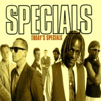

THE SPECIALS mk.2

In 1993 all seven members of the Specials were asked by famed ska producer Roger Lomas to record an album of classic ska tracks with Jamaican legend Desmond Dekker.
Only four agreed; Lynval Golding, Horace Panter, Neville Staple and Roddy. The album and accompanying video entitled ‘King Of Kings’ were both poorly received in europe but amazingly did very very well in Japan. So much so that a promoter wanted to organise gigs for them.
The band tried to explain that it wasn’t the complete line-up and that they hadn’t planned on staying together, the Dekker album was only a one-off. Anyway, the money was too good to turn down so they did the tour. Pretty soon tours of Europe and America followed. The Specials were back!
They got a record deal in 1996 with Kuff Records, owned by Ali Cambpell of UB40 and released the covers album ‘Today’s Specials’. With hindsight it was a mistake to come back with a covers album, but at the time none of the band apart from Roddy had written new material. The album had medium success and kept the band on the road for much of 1996/7.
During their time on the road Kuff folded, though all was not lost, the american label Way Cool Music were quick to sign them up. This was due to the fact that ska was more popular in the States than it had ever been before with bands like No Doubt and The Mighty Mighty Bosstones entering the charts.
With the new deal came brand new material. The new album, ‘Guilty ‘Til Proven Innocent’ featured many great tracks including: Keep On Learning, Tears In My Beer and It’s You, the later of which was used in the television ad campaign for Walls solero ice cream.
This time around the album received massive critical aclaim from both fans and reviewers alike despite the fact that due to problems with the label it only got released in America and Japan. Many fans had to pay over the odds for imports and described the album as continuing on from where More Specials had left off 17 years earlier!